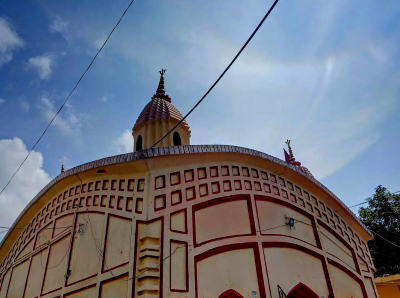

<!DOCTYPE html PUBLIC "-//W3C//DTD XHTML 1.0 Transitional//EN" "http://www.w3.org/TR/xhtml1/DTD/xhtml1-transitional.dtd">
<html xmlns="http://www.w3.org/1999/xhtml">
<head>
<title>*Madhupur*</title>
<meta http-equiv="content-type" content="text/html; charset=iso-8859-1" />
<link href="style.css" rel="stylesheet" type="text/css" />
</head>
<body>
<div id="header">
  <h1>Madhupur</h1>
</div>
<div id="topnav">
  <ul id="topnavlist">
    <li><a href="#">Home</a></li>
    <li><a href="#">About</a></li>
    
    
  </ul>
</div>
<div id="gutter"></div>
<div id="col1">
  <h2>CREATORS</h2>
  <div id="navcontainer">
    <ul id="navlist">
      <li><a href="#">aditya</a></li>
      <li><a href="#">shreyash</a></li>
      <li><a href="#">lakshya</a></li>
      <li><a href="#">TARIKH</a> </li>
    </ul>
  </div>
  <p>madhupur is a beautiful city this city is situated in india Madhupur is famous for his food madhupur 
    have many tourist places which makes it easier to communicate with other cities there are many mohallas and places 
    the estimated popoulation of madhupur is 200000 peoples
  </p>
</div>
<div id="col2">
  <h2>Welcome TO <span style="color:#F17327;">'MADHUPUR'</span></h2>
  <blockquote>. <br />

  <p></a> According to the 2011 Census of India, Madhupur had a total population of 55,238, of which 28,889 (52%) were males and 26,349 (47%) were females. Population in the age range 0–6 years was 7,848 (14%). The total number of literate persons in Madhupur was 37,658 (79.46% of the population over 6 years) out of which male and female literacy rate is 86.46 and 71.72 percent respectively.[7]

    Religion
    Religion in Madhupur town[8]
    Religion		Percent
    Hinduism	
     
    59.87%
    Islam	
     
    38.93%
    Christianity	
     
    1.02%
    Sikhism	
     
    0.02%
    Jainism	
    0.01%
    Buddhism	
     
    0.03%
    Others	
     
    0.12%
    Hinduism is the majority religion of Madhupur town followed by 59.87% of the population. Islam is the dominant minority religion in the town followed by 38.93% of the people.[.</p>
  <h2> About</h2>
  <P>MADHUPUR
    Madhupur is a town with a municipality in Deoghar district in the Indian state of Jharkhand. It is a subdivisional town, famous for the production of sweets and widely considered a popular health resort for tourists as the water and overall climate is said to cure many stomach and digestion ailments.[3]

History
According to legends, the place is named after a Gopa named Madhu, who had a large herd of cattle in the region.[4]

Historically, there were many notable people, particularly from Bengal, who owned a house in Madhupur and lived there for long periods whenever they could. Amongst them were Sir Asutosh Mookerjee. His younger son, Uma Prasad Mookerjee, the writer famous for his travel books spent time there
  </P>
  <h2> EDUCATION</h2>
  <p>Colleges
    Madhupur College, Jharkhand
    Schools
    Carmel School Madhupur - CISCE [1]
    Madhusthali Vidyapeeth - CISCE [2]
    Mahendra Muni Saraswati Shishu Vidya Mandir - CBSE [3]
    Mothers International Academy - CBSE [4]
    Kendriya Vidyalaya - CBSE
    Shalom School - CBSE [5]
    Nalanda Academy - CBSE [6]
    St. Joseph High School - JAC [7]
    MLG High School - JAC
    Shyama Prasad Mukherjee High School - JAC
    Anchi Devi Balika Uccha Vidyalaya - JAC</p>
    <h2>TOURISM</h2>
    <p>Maa Pathrol Kali Temple is located in Madhupur, Deoghar in the Santhal Parganas division of the state of Jharkhand, India. It is roughly 7 km from the Madhupur Town. The temple consists of a shrine dedicated to Goddess Kali. It is one of the oldest and sacred temple in Madhupur which was built by Raja Digvijay Singh about 6 to 7 centuries ago.[10] Worship is held every day from Monday to Sunday. Animals are sacrificed as part of worship. There are nine more temple close to the main temple. An Annual fair is held every year during the month of Kartik (Oct.-Nov.) where thousands and thousands, of Pilgrims and devotees gather here for the worship and to witness the fair.[11][3]
      Budheshwari Temple is located across the Pathro river on its verge near village Burhai which is just 28 km from Madhupur. The image of Goddess Kali known as Maa Budheswari is installed up on a hill of one solid block. The sight of the hill is very picturesque. A large number of people assemble there on the eve of Nawan Mela in the month of Agrahan(Nov-Dec) to worship. The Mela is concluded when the day is over. A fair is also held here on the occasion of Makar Sankranti in the month of Magh(Jan-Feb)[3][12][13]
      Apart from religious significance, It attracts a number of tourists due to its scenic natural beauty, calm & peaceful environment. Bakulia Falls, Usri Falls and Ramkrishna Mission etc. counts amongst most famous attractions of the town. Being an important railway junction on the Delhi-Howrah line it is well-connected to other major parts of the country thus making it easier for people to reach here. Madhupur has gained popularity as Health Resort due to the two Monsoon Rivers, Patro Nadi & Jaynti Nadi flowing here the water of which is believed to provide relief from various stomach and digestion ailments. The weather in Madhupur is very pleasant during the months from October to March, and so it proves to be the best time to visit.[3]</p>
  <p>
</div>
<div id="col3">
  <h2>LOCATION</h2>
  <p>Madhupur is at 24.26°N 86.65°E.[5] It has an average elevation of 228 metres (748 ft). Madhupur is surrounded by two monsoon rivers, Pathro Nadi and Jayanti Nadi. They feed the Ajay, which is a tributary of the Ganges, meeting it at Katwa in West Bengal</p>
  <ul>

  <form action="#" method="post">
    <fieldset>
    <legend>Search</legend>
    <div> <span>
      <label for="txtsearch">  :search</label>
      </span> <span>
      <input type="text" value="demo only" name="txtsearch" title="Text input: search" id="txtsearch" size="25" />
      </span> </div>
    </fieldset>
  </form>
</div>
<div id="footer"> <a href="#">homepage</a> | <a href="tarikhhussaink5@gmail.com">contact</a> | <a href="http://validator.w3.org/check?uri=referer">html</a> </a><br/>
  This work is licensed under a <a rel="license" href="http://creativecommons.org/licenses/by/3.0/">Creative Commons Attribution 3.0 License</a> </div>
</body>
</html>
